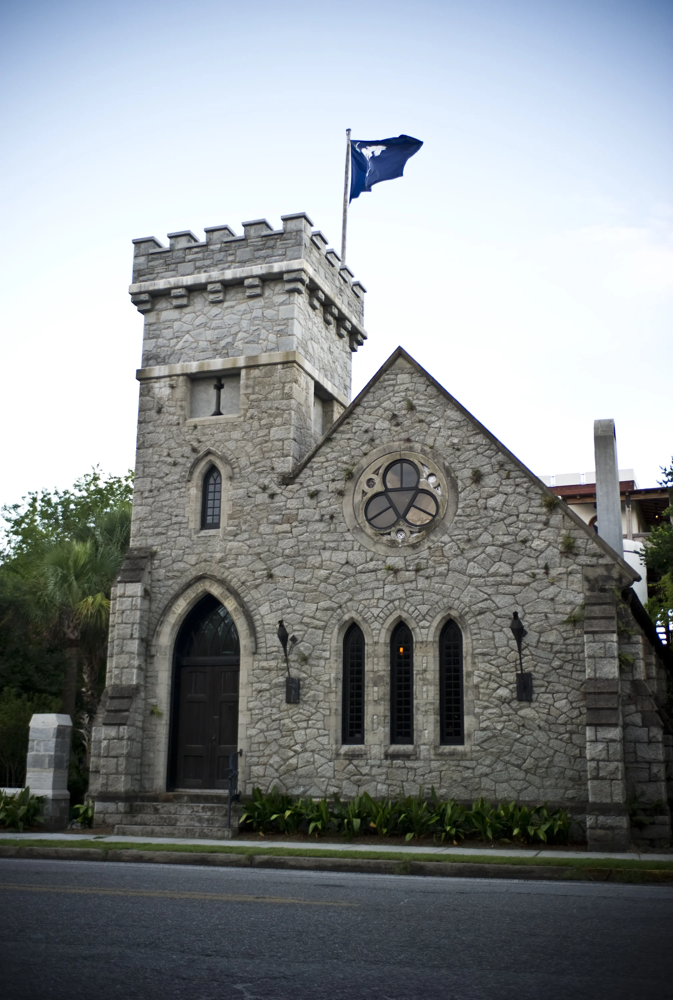
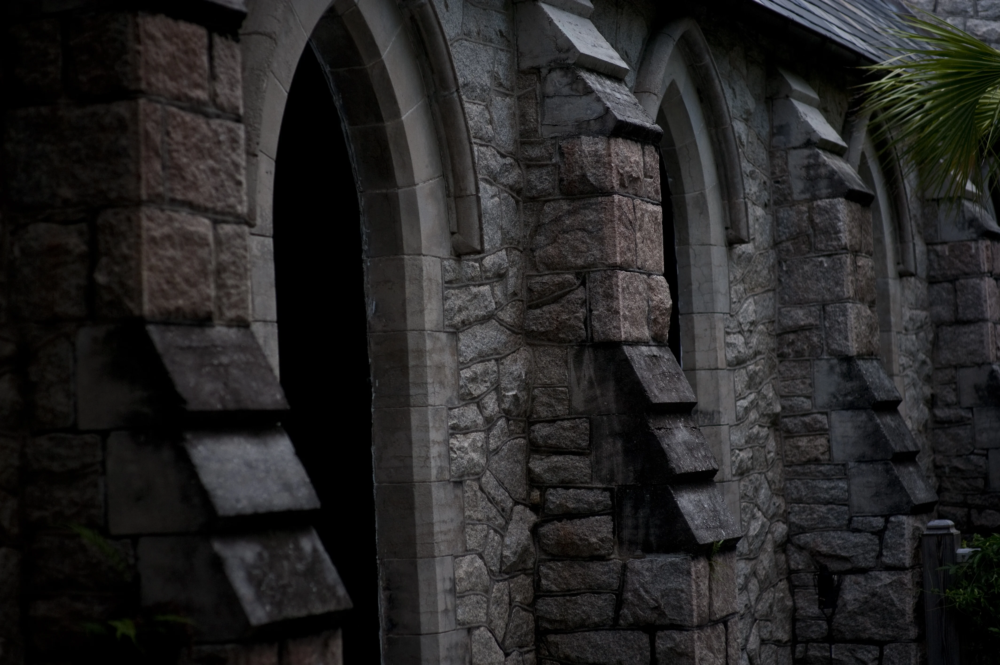
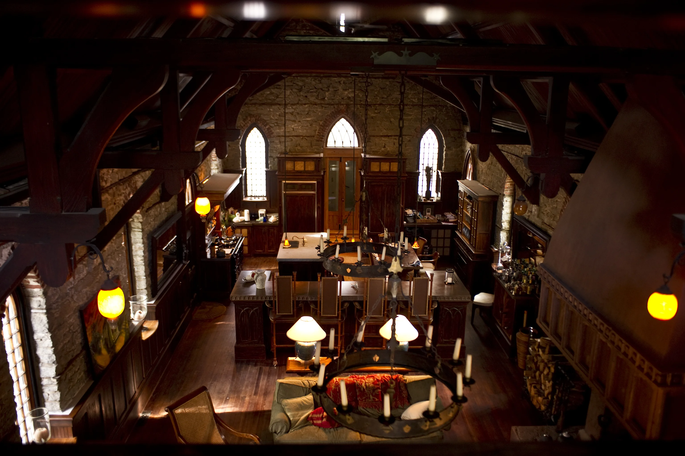
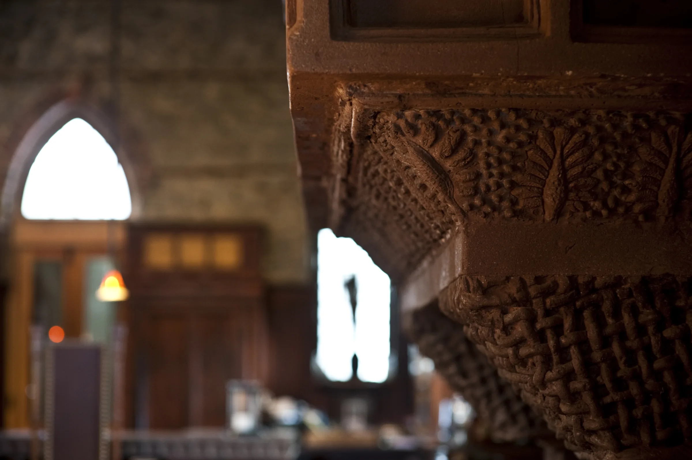
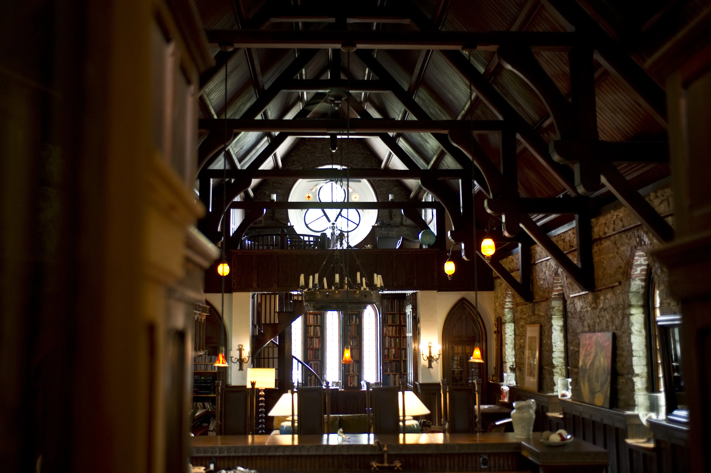
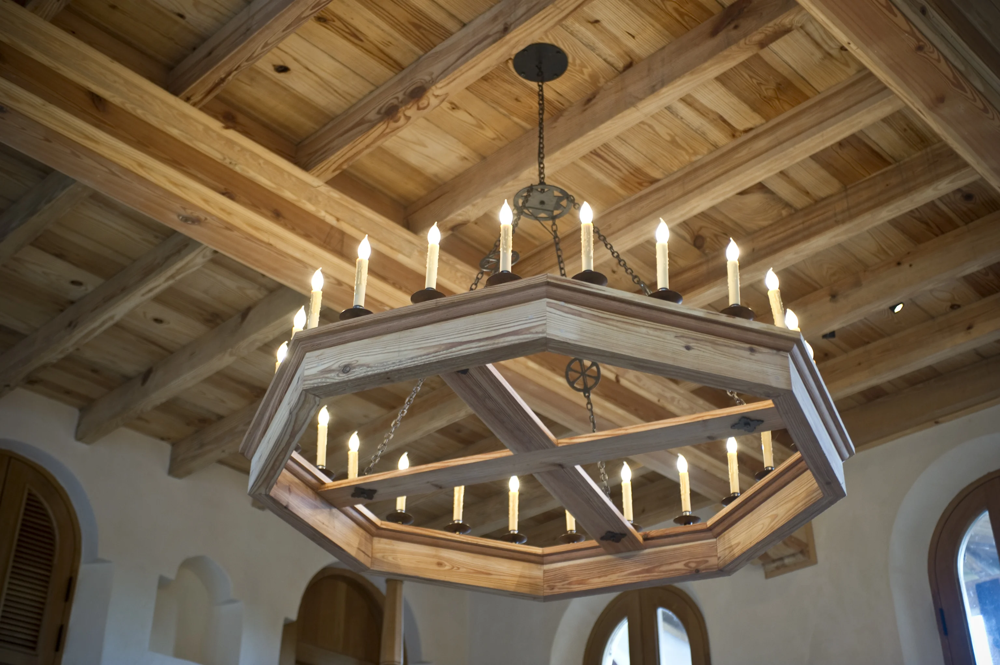
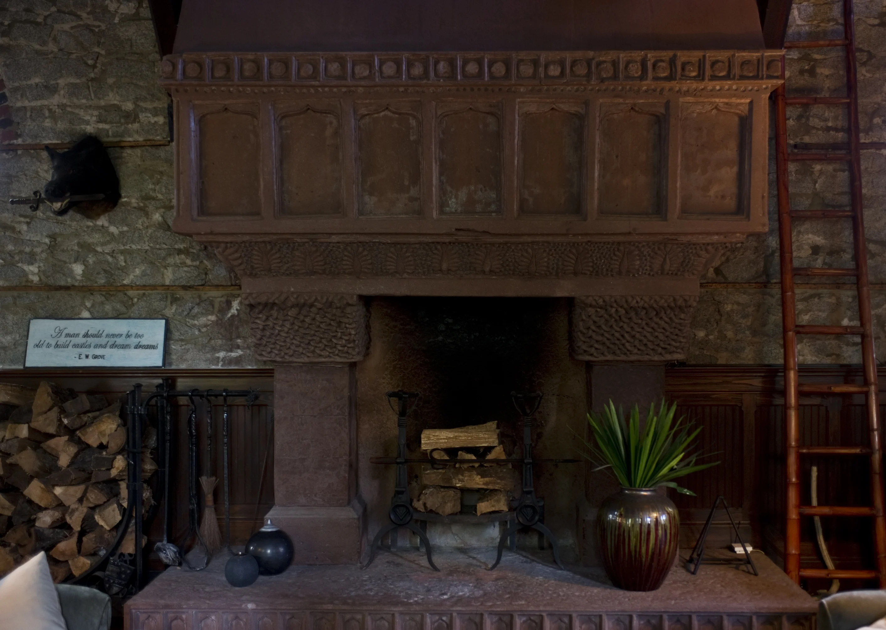
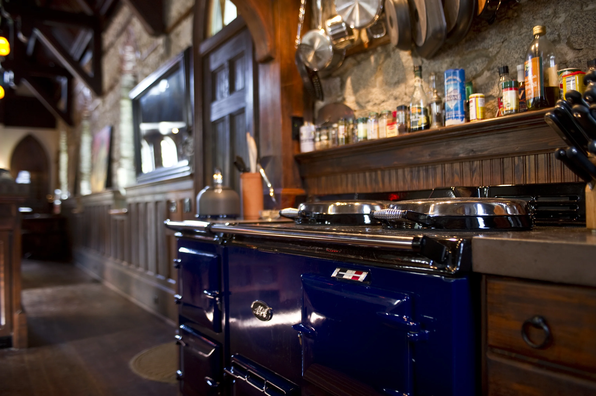
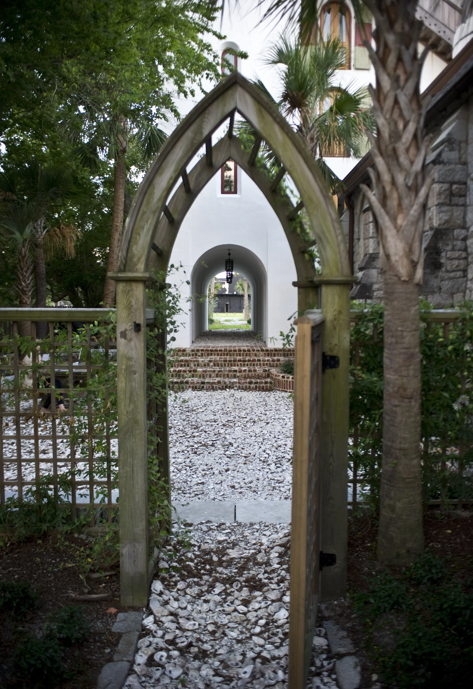

On the morning of September 12th, 1891, a cornerstone was set into the soft earth of Sullivan's Island's western end — rubble granite, rough-cut, uncoursed, as honest as any wall on the Carolina coast.
Read the chapter · 1891
XII · IX · MDCCCXCI
Cornerstone Laid · Chapel of the Holy Cross · Sullivan's Island, SC
Exterior · Original Chapel






"The stone nave was bare, its tall ceiling carried by open timber trusses and hammer beams — light entering only through the deep reveals of pointed-arch windows."— Witold Rybczynski, The Pennsylvania Gazette









